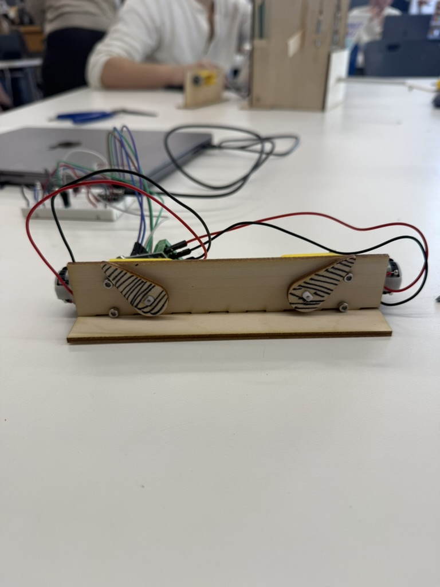
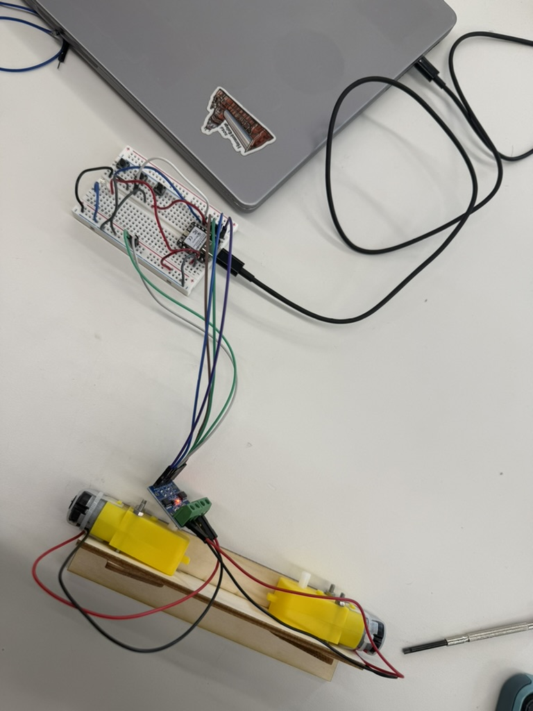
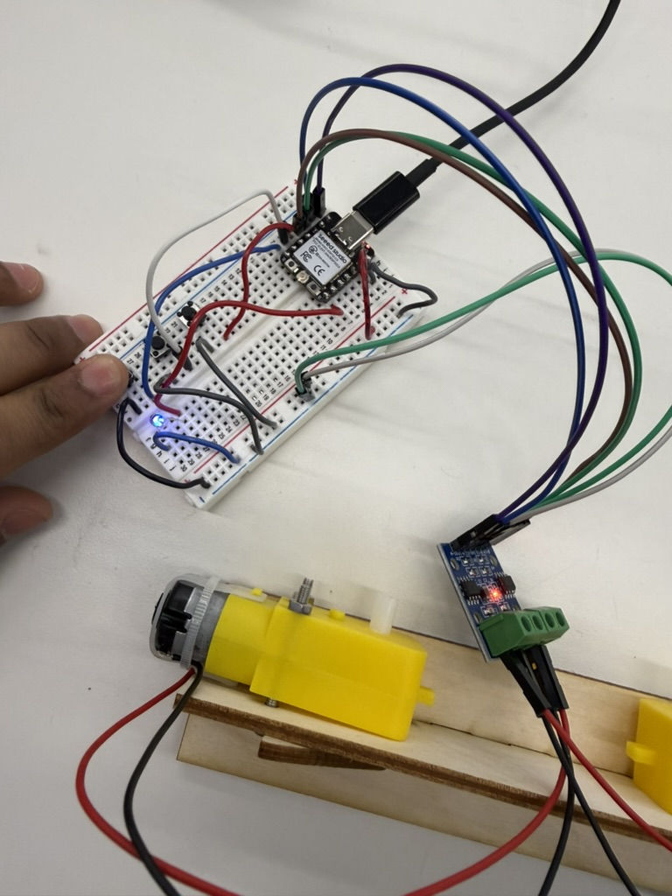
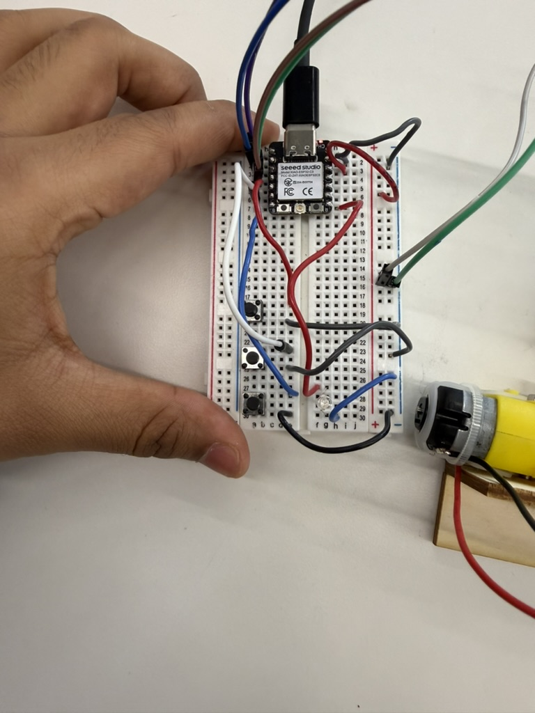
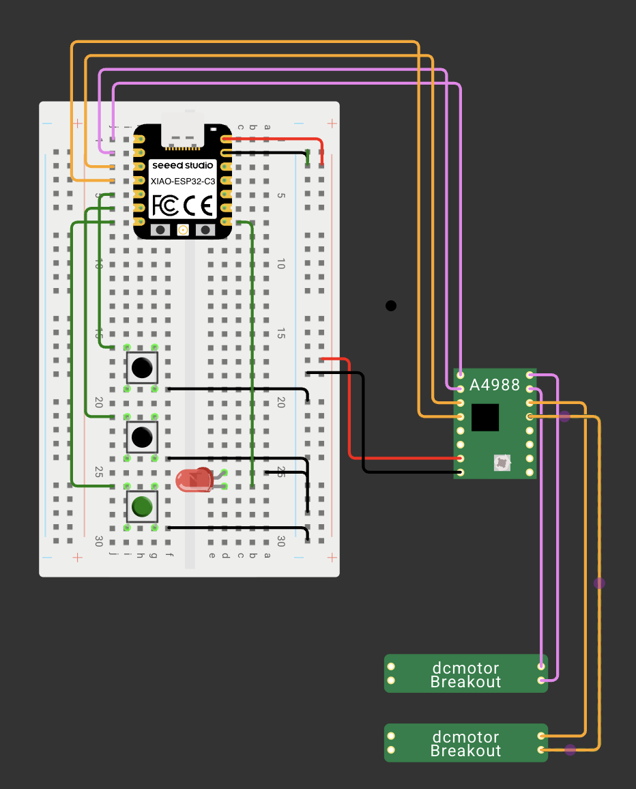

Project 04
I stuck to a simple 2-motor gate setup, using my Microcontroller to build a pseudo-RC remote type circuit.
For this week, I tried to use the class based programming techniques to build a RC-Motor type remote. The idea being that one button controls the movement of motor A while the other controls the movement of motor B. On their own, they default to forward movement. However, the third button acts as the reverse toggle. When either (or both) motor switches are pressed with the reverse toggle, the motors move in reverse direction. There's a helpful LED to indicate whenever the reverse button is toggled down!
Video · If the embed fails, watch on YouTube: Open video
At the bottom is the circuit I drew using Wokwi. With no DC motors or motor driver, I used placeholders instead of them. The circuit in itself is pretty standard. I tried to think of different ways to engage both forward and reverse movement and this seemed to be a nice tradeoff between number of buttons and freedom of movement.





Finally, here's the code. I restructured the class based 2-motor movement code from class but replacing timers with a toggle button associated with each motor. Further, the reverse motor acts as a global toggle for both. As a potential next step, I think having a system where the motors keep moving unless toggled again could be interesting. I think having a 3-state variable for each motor, capturing forward, reverse, and no movement would probably be the best way to do something like this.
// Motors
int B1A = D2;
int B1B = D3;
int A1A = D0;
int A1B = D1;
// Button pins
int BTN_A = D4;
int BTN_B = D5;
int BTN_R = D6;
// Reverse Indicator
int LED = D7;
class Motor{
int A;
int B;
int btn;
public:
Motor(int pA, int pB, int bt){
A = pA;
B = pB;
btn = bt;
pinMode(A, OUTPUT);
pinMode(B, OUTPUT);
pinMode(btn, INPUT_PULLUP);
stop();
}
void update(bool reverseActive) {
bool toMove = (digitalRead(btn) == LOW); // checks if local button is pressed
if (!toMove) {
stop();
} else {
if (reverseActive) backward(); // direction dependent on global reverse button
else forward();
}
}
// forward move
void forward(){
digitalWrite(A, HIGH);
digitalWrite(B, LOW);
}
// backward move
void backward(){
digitalWrite(A, LOW);
digitalWrite(B, HIGH);
}
// stop motor
void stop(){
digitalWrite(A, LOW);
digitalWrite(B, LOW);
}
};
Motor m1(A1A, A1B, BTN_A);
Motor m2(B1A, B1B, BTN_B);
void setup(){
pinMode(BTN_R, INPUT_PULLUP);
pinMode(LED, OUTPUT);
}
void loop(){
bool reverseMode = (digitalRead(BTN_R) == LOW);
digitalWrite(LED, reverseMode);
m1.update(reverseMode);
m2.update(reverseMode);
}